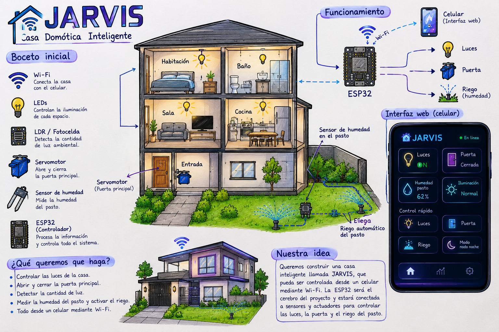

El proyecto estara reprensentado como una pequeña casa dividida en diferentes espacios:

La ESP32 estara conectada a los sensores y actuadores de la casa
¿como imaginamos la casa?
Queremos una casa con apariencia moderna y tecnologica.
la pagina web tendra un concepto visual:
🌑 Fondo oscuro.
🧊 Glassmorphism.
🟣 Violeta.
🔵 Cyan.
✨ Efectos de iluminación.
🤖 Diseño futurista.
📱 Interfaz adaptable a celular.
¿Que queremos que haga?
Queremos que pueda :
control manual:
📱 CELULAR
↓
Wi-Fi
↓
ESP32
↙ ↘
💡 Luz 🚪 Puerta
Control automatico
☀️ LDR
↓
ESP32
↓
¿Está oscuro?
↙ ↘
SÍ NO
↓ ↓
💡 ON 💡 OFF
Materiales
Componente
¿Para qué lo utilizaremos?
🧠 ESP32
Controlar todo el proyecto y conectarlo por Wi-Fi
🚪 Servomotor
Abrir y cerrar la puerta
💡 LEDs
Representar las luces de la casa
🌟 LDR / Fotocelda
Detectar la iluminación ambiental
💧 Sensor de humedad
Medir la humedad
🔌 Protoboard
Montar las conexiones
➖ Resistencias
Proteger y controlar la corriente de los LEDs y sensores
📎 Cables Dupont
Realizar las conexiones
🔋 Cable USB / fuente
Alimentar la ESP32
🏠 Cartón / material para maqueta
Construir la casa
Componentes principales
Los podemos dividir en:
Controlador
ESP32
Sensores
LDR
Sensores de humedad
Actuadores
LEDs
Servomotor
Conexion
Protoboard
Resistencias
Cables
Alimentación
Construcción
¿Cómo comenzamos
Primero diseñamos el funcionamiento de la casa y decidimos qué componentes necesitábamos.
Después realizamos pruebas individuales antes de construir todo el sistema.
Pasos realizados
Diseñar la maqueta
Construir la estructura de la casa y definir dónde estará cada habitación.
Probar la ESP32
Comprobar que la ESP32 pueda programarse correctamente.
Conectar los LEDs
Programar el encendido y apagado de las luces.
Conectar el servomotor
Programar diferentes posiciones para representar:
🔓 Puerta abierta
🔒 Puerta cerrada
Conectar el LDR
Leer la cantidad de luz existente.
Conectar el sensor de humedad
Obtener el valor de humedad.
Crear la página web
Diseñar el dashboard de VIERNES utilizando:
HTML
CSS
JavaScript
Conectar la página con la ESP32
Hacer que los controles de la página puedan enviar instrucciones a la ESP32 mediante Wi-Fi.
Pruebas y cambios
¿Qué probamos?
Probamos cada componente por separado y posteriormente intentamos integrarlos.
Por ejemplo:
Encender y apagar LEDs.
Mover el servomotor.
Leer el LDR.
Leer humedad.
Conectar la ESP32 al Wi-Fi.
Probar los botones de la página web.
¿Qué funcionó?
Los componentes que funcionen correctamente deben registrarse aquí.
Por ejemplo:
"El LED respondió correctamente a las instrucciones de la ESP32."
"El servomotor pudo cambiar entre las posiciones de puerta abierta y cerrada."
¿Qué problemas encontramos?
Aquí deben colocar los problemas que realmente les hayan ocurrido.
Algunos ejemplos posibles:
Conexiones incorrectas.
Lecturas incorrectas del sensor.
El servo no tenía suficiente alimentación.
Problemas de conexión Wi-Fi.
Errores en el código.
La página no enviaba correctamente las instrucciones.
¿Qué cambiamos?
Explicar cómo solucionaron cada problema.
Ejemplo:
"Revisamos las conexiones y modificamos el código para corregir la lectura del sensor."
"Modificamos el diseño de la página para que los botones fueran más fáciles de utilizar."
Resultado
¿Cómo quedó el proyecto?
Al finalizar tendremos una maqueta de una casa inteligente controlada mediante una ESP32 y una interfaz web.
La página permitirá visualizar y controlar diferentes elementos de la casa.
¿Qué puede hacer?
Nuestro proyecto puede:
💡 Controlar las luces.
🚪 Controlar la puerta.
☀️ Detectar iluminación.
💧 Mostrar humedad.
📡 Utilizar Wi-Fi.
📱 Recibir instrucciones desde el celular.
🤖 Ejecutar funciones automáticas.
¿Logra solucionar el problema?
Sí, parcialmente.
El proyecto demuestra cómo la domótica puede facilitar algunas tareas del hogar mediante sensores, automatización y control remoto.
Además, permite comprender cómo funciona un sistema IoT, donde los dispositivos pueden comunicarse y ser controlados mediante una red.